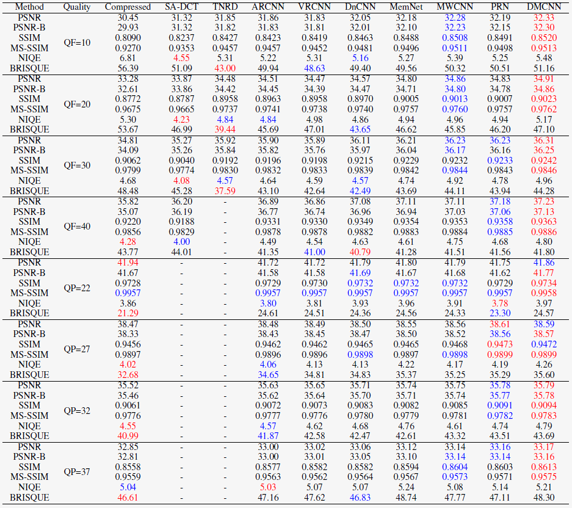

Large-scale Ideal Ultra high definition 4K (LIU4K) Dataset
Dataset Superiorities
LIU4K has several unprecedented superiorities as follows,
- High-resolution definition. Compared to previous datasets, the resolutions of the images in our dataset vary from 2K-7K, larger than those in previous datasets, which offers abundant materials for testing and evaluating the performance in 4K/8K display devices.
- Large-scale. Our dataset is large-scale. Our dataset includes 1500 high-resolution training images and 80 high-resolution validation images, which are much more than those in previous datasets. Thus, training and evaluation based on LIU4K are more comprehensive and balanced.
- Diversified and complex contents. Our dataset includes very diversified kinds of backgrounds and objects and also is diverse and complex in low-level signal distribution.
- High visual quality. Due to its high high-resolution definition and the diversified and complex contents, images in our LIU4K dataset has high visual qualtiy.
Dataset Overview
Figure. 1. Example training set images sampled from LIU4K.
Application: Compression Artifacts Redunction
Table 1: Objective evaluations of different methods on liu4k for compression artifacts reduction.
The value in red, and blue colors denote the first, and second best results, respectively.

Download
Baiduyun: Train (extracted code: kqxk), Validation (extracted code: jsnt)
PKU Drive: Train, Validation
Please notice that this dataset is made available for academic research purpose only. All the images are collected from the Internet, and the copyright belongs to the original owners. If any of the images belongs to you and you would like it removed, please kindly inform us, we will remove it from our dataset immediately.
Citation
@inproceedings{Liu4K, author={J. Liu and D. Liu and W. Yang and S. Xia and X. Zhang and Y. Dai}, booktitle={arXiv}, title={A Comprehensive Benchmark for Single Image Compression Artifacts Reduction}, year={2019}, }